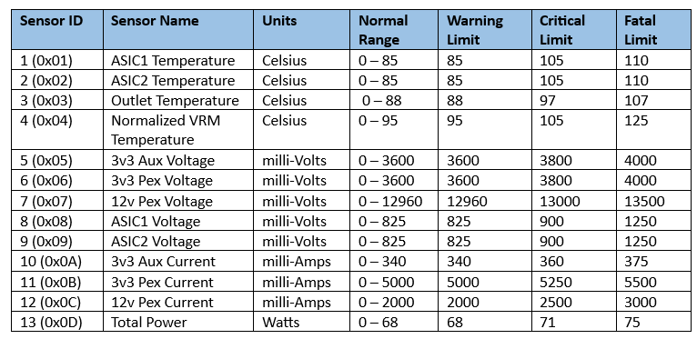

Appendix A¶
Alveo™ PCIe Info¶
The table below captures the PCIe information for the following Alveo™ products: - U2xx(U200, U250, U280) - U50x (U50, U50C, U50LV) - U30 - U55C, U55N - VCK5000 - V70 - UL3xxx - MA35D
NOTE: The following PCIe information are constant across all Alveo™ cards.
Vendor ID : ** 0x10EE**
Subsystem VID : ** 0x10EE**
Subsystem DID : ** 0x000E**
Table: Alveo PCIe Device ID
Card/Shell |
Device ID |
|---|---|
U200 Golden |
0xD000 |
U200 XDMA & 2RP |
PF0=0x5000 PF1=0x5001 PF2=0x5002 PF3=0x5003 |
U200 QDMA |
PF0=0x5010 PF1=0x5011 PF2=0x5012 PF3=0x5013 |
U250 Golden |
0xD004 |
U250 XDMA & 2RP |
PF0=0x5004 PF1=0x5005 PF2=0x5006 PF3=0x5007 |
U250 QDMA |
PF0=0x5014 PF1=0x5015 PF2=0x5016 PF3=0x5017 |
U280 Golden |
0xD00C |
U280 XDMA |
PF0=0x500C PF1=0x500D PF2=0x500E PF3=0x500F |
U50 Golden |
0xD020 |
U50 XDMA |
PF0=0x5020 PF1=0x5021 PF2=0x5022 PF3=0x5023 |
U50LV XMDA |
PF0=0x5060 PF1=0x5061 PF2=0x5062 PF3=0x5063 |
U50C |
PF0=0x506C PF1=0x506D PF2=0x506E PF3=0x506F |
U30 Golden |
0xD03C |
U30 (Production) |
PF0=0x513C PF1=0x513D PF2=0x513E PF3=0x513F |
U55N |
PF0=0x5058 PF1=0x5059 PF2=0x505A PF3=0x505B |
U55C |
PF0=0x505C PF1=0x505D PF2=0x505E PF3=0x505F |
VCK5000 XDMA |
PF0=0x5044 PF1=0x5045 PF2=0x5046 PF3=0x5047 |
VCK5000 QDMA |
PF0=0x5048 PF1=0x5049 PF2=0x504A PF3=0x504B |
V70 QDMA |
PF0=0x5094 PF1=0x5095 PF2=0x5096 PF3=0x5097 |
V70PQ2 QDMA |
PF0=0x50B0 PF1=0x50B1 PF2=0x50B2 PF3=0x50B3 |
UL3xxx |
PF0=0x50C0 PF1=0x50C1 PF2=0x50C2 PF3=0x50C3 |
MA35D |
PF0=0x5070 PF1=0x5071 PF2=0x5072 PF3=0x5073 |
PF -> Physical Function lspci command usage: sudo lspci -s :03:00.0 -vv
Thermal Limits¶
The following table captures the QSFP temperature limits for all QSFP capable Alveo™ products - U2xx(U200, U250, U280), U50x (U50, U50C, U50LV) , U55x (U55N, U55C) and VCK5000 products.
Table: QSFP Temperature Limits
Sensor Name |
Warning Limit |
Critical Limit |
Fatal Limit |
|---|---|---|---|
QSFP temperature [1] |
|||
Commercial Type |
65°C |
70°C |
75°C |
Industrial Type |
80°C |
85°C |
90°C |
Notes:
[1] QSFP temperature limits may vary based on the device OEM (manufacturer) and model. For thermal references, QSFP devices are broadly categorized as Commercial or Industrial type.
Wherever supported by the QSFP device, SC FW accesses the ‘Max case temperature’ via I2C read at register offset 190 as per the SFF-8636 2.10a specification and dynamically sets the device specific critical thermal limit. For QSFP devices that doesn’t support SFF-8636 spec, SC FW assigns the critical limit as 70°C for Commercial (when register offset 190 returns 0x00) or 85°C for Industrial (when register returns 0xFF).
Warning limit = (Max case temperature - 5)
Critical limit = Max case temperature
Fatal limit = (Max case temperature + 5)
For additional thermal information, refer to the data sheet specific to the Alveo™ product:
Table: FPGA/ACAP/ASIC and Board Thermal Limits
Sensor Name |
Warning Limit |
Critical Limit |
Fatal Limit |
|---|---|---|---|
U200/U250 |
|||
FPGA Device temperature |
88°C |
97°C |
107°C |
Board temperature [4] |
100°C |
110°C |
125°C |
U280 |
|||
Logical FPGA temperature [2] |
88°C |
97°C |
107°C |
Board temperature [4] |
100°C |
110°C |
125°C |
U50, U50LV, U55N/C |
|||
Logical FPGA temperature [2] |
88°C |
97°C |
107°C |
Board temperature [4] |
100°C |
110°C |
125°C |
U50C |
|||
Logical FPGA temperature [2] |
88°C |
100°C |
107°C |
Board temperature [4] |
100°C |
110°C |
125°C |
U30 [3] |
|||
Max FPGA junction temperature (Max of ZYNQ1 & ZYNQ2 FPGA) |
90°C |
95°C |
100°C |
Board temperature |
75°C |
80°C |
85°C |
V70 |
|||
Max ACAP junction temperature |
97°C |
100°C |
105°C |
Board temperature [4] |
105°C |
110°C |
150°C |
[2] Logical device temperature is maximum of FPGA die temperature and the HBM temperature.
Note: Alveo™ U30 specific [3] The OTP (One Time Programmable) values are programmed onto the temperature sensor device at the time of Manufacturing. Additionally, on boot-up, SC also configures the temperature device to ensure the temperature sensor device automatically shuts down the ZYNQ devices when either ZYNQ or board temperature exceeds the fatal limit.
[4] Board temperature is the maximum value among various on-board temperature sensors like inlet, outlet and VRs.
Note: The SC FW automatically shuts down the power to Accelerator device (FPGA/ACAP/ASIC) when any of the temperature value exceeds the fatal limit.
MA35D sensor threshold limits¶
The following table lists the threshold values for various thermal and electrical sensors in MA35D product:

NOTE: The threshold values (Warning, Critical & Fatal) are provided to BMC via PLDM PDRs.
When any one of the following sensors reach their respective Fatal limits, Satellite Controller autonomously resets (i.e.) shuts down power to both the SuperNova ASIC devices.
Outlet Temperature
ASIC1/2 Temperatures
Normalized VRM Temperature
3v3 Pex Voltage & Current
12v Pex Voltage & Current
AMD Support
For support resources such as answers, documentation, downloads, and forums, see the Alveo Accelerator Cards AMD/Xilinx Community Forum.
License
Licensed under the Apache License, Version 2.0 (the “License”); you may not use this file except in compliance with the License.
You may obtain a copy of the License at http://www.apache.org/licenses/LICENSE-2.0
All images and documentation, including all debug and support documentation, are licensed under the Creative Commons (CC) Attribution 4.0 International License (the “CC-BY-4.0 License”); you may not use this file except in compliance with the CC-BY-4.0 License.
You may obtain a copy of the CC-BY-4.0 License at https://creativecommons.org/licenses/by/4.0/
Unless required by applicable law or agreed to in writing, software distributed under the License is distributed on an “AS IS” BASIS, WITHOUT WARRANTIES OR CONDITIONS OF ANY KIND, either express or implied. See the License for the specific language governing permissions and limitations under the License.
XD038 | © Copyright 2023, Advanced Micro Devices Inc.